Most of the tea utensils I have I bought second hand on temple flea markets during my travels to Japan. I'm fond of every item that I bought, but also, unfortunately, I have limited room for tea in my flat. Because of that, I'm listing here some items that I don't want to throw away, but that also I cannot keep. Each item has a price not because this is a commercial endeavour, but because I know from experience that things given for free usually also feel to the recipient like they are worthless. With this idea in mind I gave each item a symbolic price.

Black Dragon
「ブラック・ドラゴンã€


Black Dragon「ブラック・ドラゴンã€
There is a cultivar of the wisteria plant called black dragon that can produce flowers so dark purple they appear black to the poetically inclined. I thought this was a suitable name for this å°æ£— and the corresponding 香åˆ, a matching set for the 茶箱.
Sold as a set, comes in a paper box.
The price includes only the items described above; any other objects in the pictures are for size comparison and illustration only.
Purchase (for 40 Swiss francs) Close Window
KÅan's Answer
「見解ã€


KÅan's Answer「見解ã€
Never before have I had a tea scoop that scoops so well. I named it 見解, which is the reply Zen disciples try to give in response to their kÅan. While the superficial meaning of the response is not so important, its delivery and the clarity of it are. So when scooping the tea with this scoop, I think one can glimpse at this feeling.
Comes in a paper box. The 棗 on the photo is for comparison only: In this photo, I used a å°æ£—.
The price includes only the items described above; any other objects in the pictures are for size comparison and illustration only.
Purchase (for 80 Swiss francs) Close Window
Seven Grasses
「七è‰ã€


Seven Grasses「七è‰ã€
This é¦™åˆ for the 茶箱 is made with 一閑張り lacquer, a technique that uses paper, rather than wood, as a base. The é¦™åˆ is thus much lighter, and has a more textured surface. On it is 蒔絵 of the 秋ã®ä¸ƒè‰, a motif that was favoured by ç„々æ–, making this a good choice for the 月 variation of 茶箱.
The price includes only the items described above; any other objects in the pictures are for size comparison and illustration only.
Purchase (for 40 Swiss francs) Close Window
Son of the River
「河太éƒã€


Son of the River「河太éƒã€
This is a set consisting of a tea caddy, a tube for the tea whisk and a dispenser for small sweets, all used for the 茶箱. All items are fashioned in 春慶塗, allowing you to see the wood grain.
The tea caddy has a special shape: To the initiated, it looks like the indentation of the head of the mythical creature called 河童 or 河太éƒ. The 河童 in Japanese folklore has an indentation in its head, often filled with water, symbolizing its connection to rivers and ponds where it resides. This water is the source of its strength, and if the liquid is spilled, the 河童 becomes powerless. This is quite useful, because these creatures can be quite aggressive. Should you encounter one, just remember to bow, forcing the Japanese creature to bow itself and spill the water.
Sold as a set, each item with a paper box.
The price includes only the items described above; any other objects in the pictures are for size comparison and illustration only.
Purchase (for 90 Swiss francs) Close Window
House of Autumn
「秋ã®å®¿ã€ 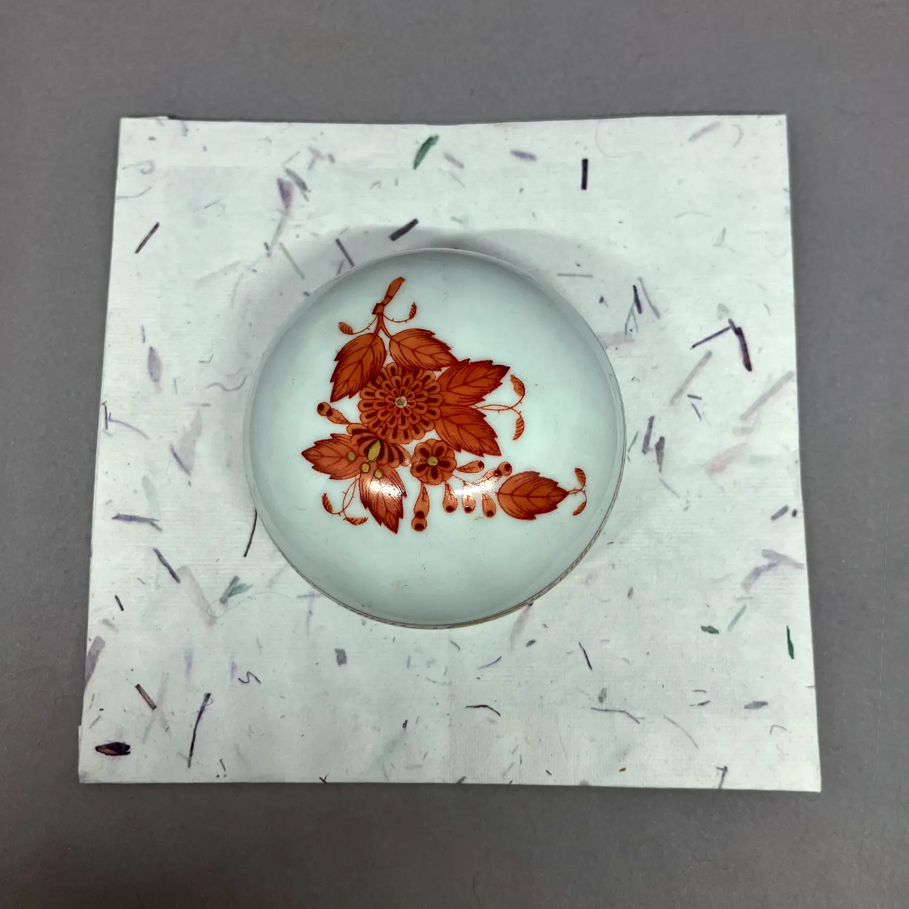
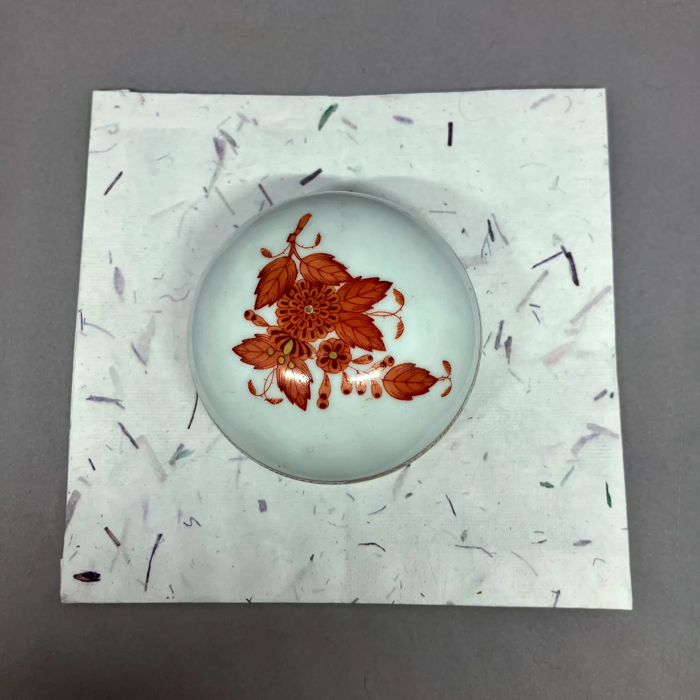


House of Autumn「秋ã®å®¿ã€
made by HerendThis é¦™åˆ is a 見立㦠piece, that is, an item that is taken from outside the world of 茶ã®æ¹¯. There is a long tradition of re-appropriating items to be used in the tea ceremony, and a great way to add a European flavour to the tea room.
This é¦™åˆ is made by the famous porcelain manufacturer, whose ceramics impressed Queen Victoria at the Great Exhibition in London in 1851, establishing its connection with the European courts.
I've named it 秋ã®å®¿ for its beautiful painting. Comes with a paper box.
The price includes only the items described above; any other objects in the pictures are for size comparison and illustration only.
Purchase (for 50 Swiss francs) Close Window
Unreasonable
「味気ãªã„ã€
 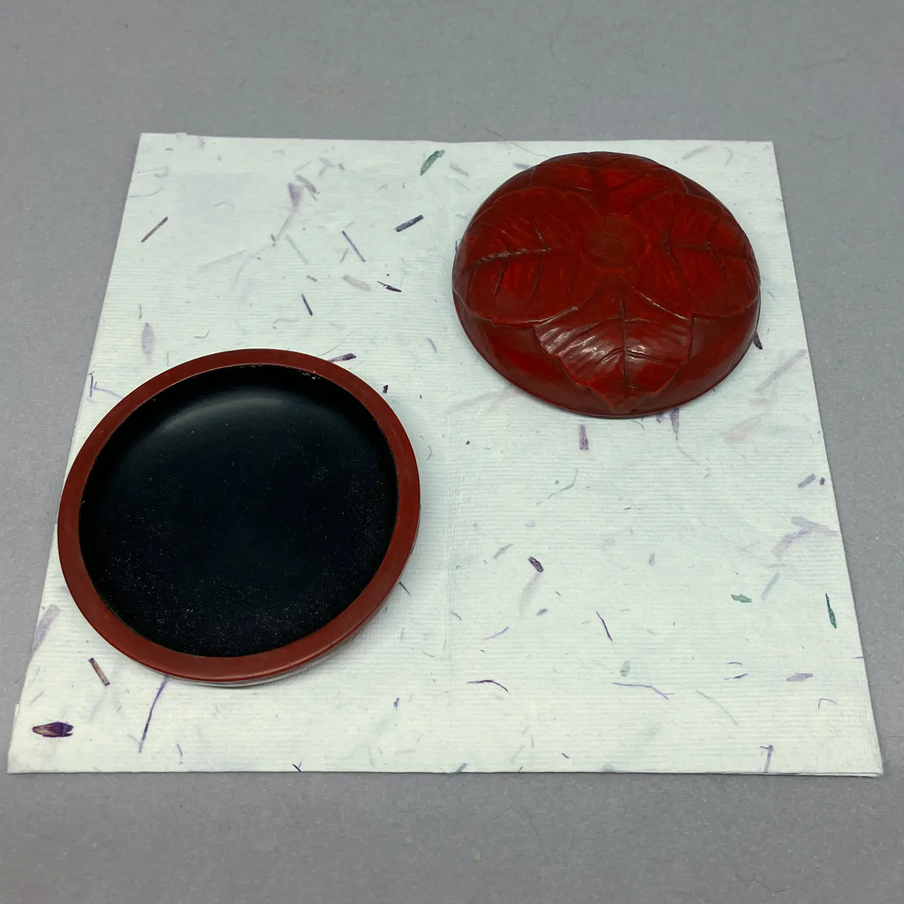
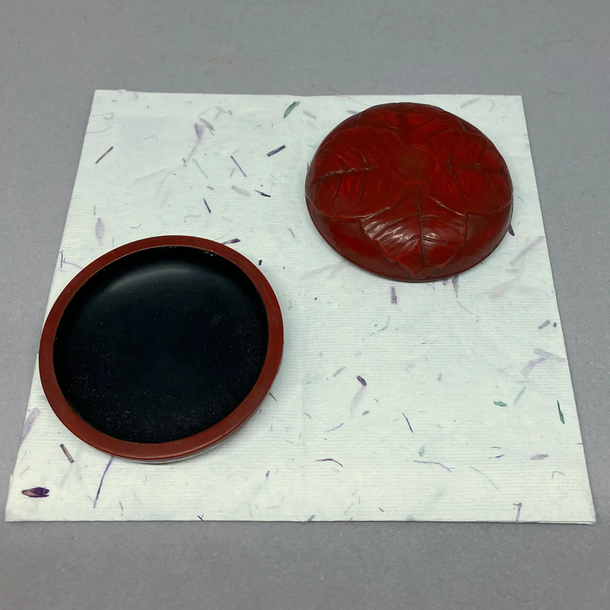

Unreasonable「味気ãªã„ã€
This é¦™åˆ is made in red lacquer carving in the shape of hydrangea (紫陽花 in Japanese.) With its deep, melancholy colour it reminds me of the following poem (which is also written on the lid of the paper box):
「花咲ãã—åºã®ã‚ã¢ã•ã‚ã‚ã¢ããªããªã©ã¦ã‚ˆã²ã‚‰ã«æˆ‘ã‚’ã™ã¦ã‘ã‚“ã€
The hydrangeas bloom in the garden, yet I feel so worthless— Why have you abandoned me so lightly, like a fleeting blossom?
It was written by å°é‡å°ç”º, a female poet of the IX century.
The price includes only the items described above; any other objects in the pictures are for size comparison and illustration only.
Purchase (for 80 Swiss francs) Close Window
The Wide Sea
「大海茶入ã€


The Wide Sea「大海茶入ã€
This type of 茶入 supposedly is what æ˜è´æ „西 used to carry the first tea seeds from China to Japan. Here, it is rendered in 瀬戸 style. Unfortunately, there's no accompanying 仕覆.
The price includes only the items described above; any other objects in the pictures are for size comparison and illustration only.
Purchase (for 80 Swiss francs) Close Window
Gust of Wind
「颯々ã€


 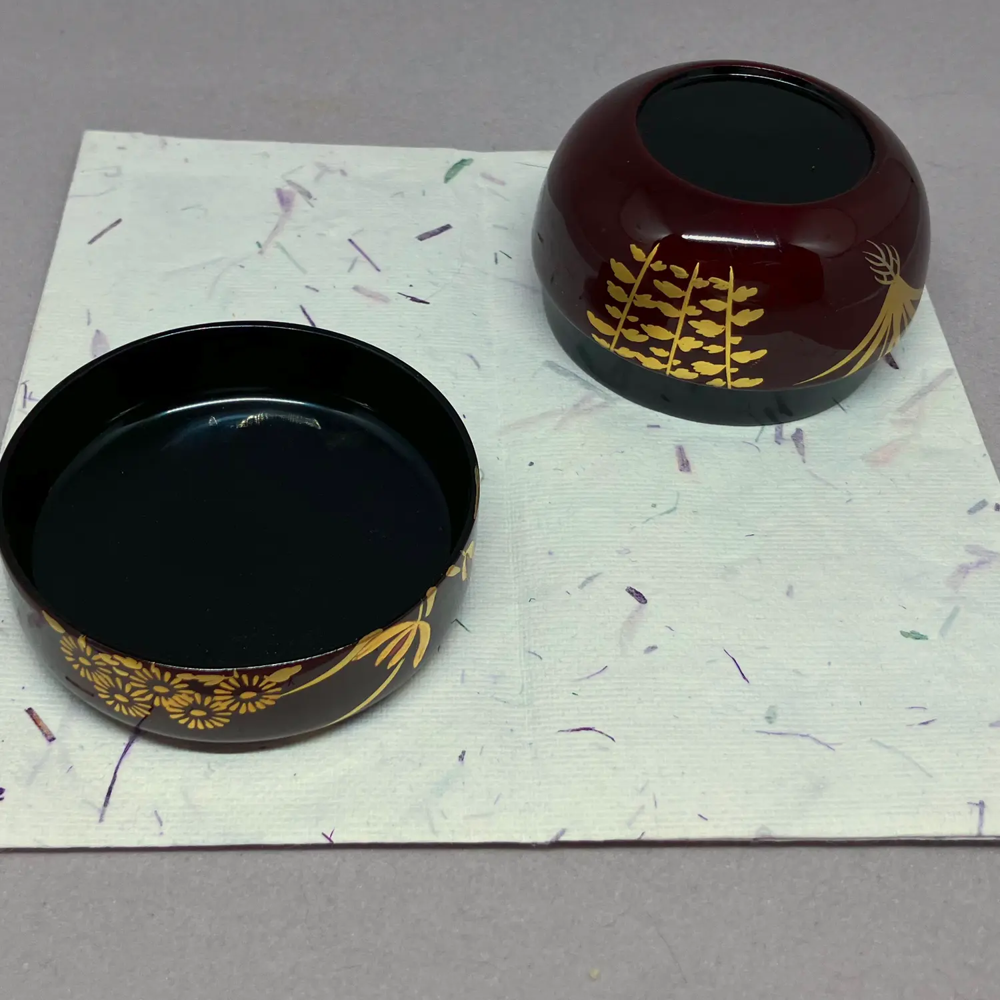
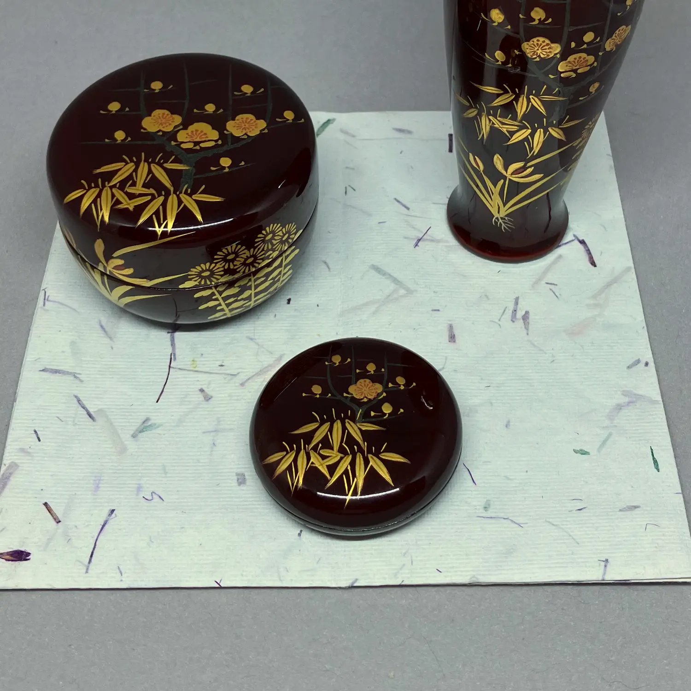
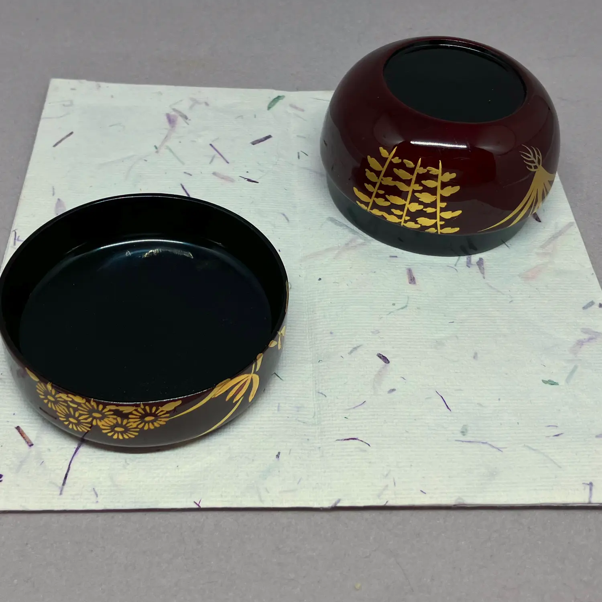
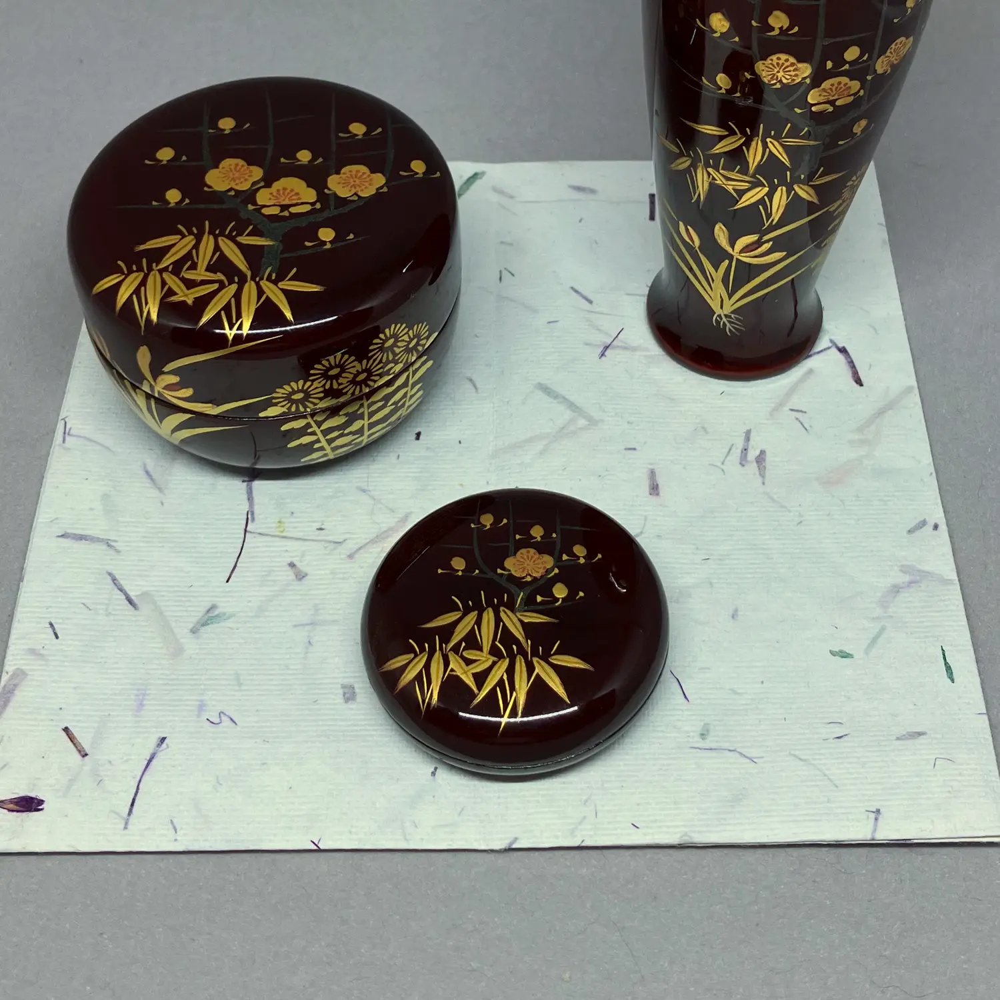


Gust of Wind「颯々ã€
made by Kuse KuhouThis type of 茶箱 is favoured by 利休, and was also famously used by éµ¬é›²æ– when he made tea in the 和敬 procedure on an airplane carrier during World War 2. It is unadorned, and shows small signs of use. Comes with a paper box.
The 振出 is made by a KyÅto-based artist in the 黄瀬戸-style, and bears the inscription of 颯々 and 今日. Comes in its own paper box.
The set is completed by a å°æ£—, 茶ç…ç’ and 香åˆ, all with 蒔絵 of the å››å›å, the Four Gentlemen. Those are plum, chrysanthemum, orchid and bamboo; making them suitable for all year around.
The price includes only the items described above; any other objects in the pictures are for size comparison and illustration only.
Purchase (for 120 Swiss francs) Close Window
Drift Ice
「æµæ°·ã€


Drift Ice「æµæ°·ã€
This è©ç„¼-style 井戸-bowl has little specks of pink, like little specks of sun through the greenery. It gives me a feeling of heralding spring, so I gave it the name æµæ°·. Imagine blocks of ice flowing down a mountain river!
However, with so many seasonal words, it also serves as a reminder to take care of our environment, lest names like this become only a reminder of the past.
Note that this bowl has a small fissure at the rim. Comes in a signed wooden box.
The price includes only the items described above; any other objects in the pictures are for size comparison and illustration only.
Purchase (for 120 Swiss francs) Close Window
Bamboo Tea Container
「竹薄茶器ã€


Bamboo Tea Container「竹薄茶器ã€
made by Okada SaburoThis tea caddy is carved from a single piece of bamboo. Around its perimeter are carved some Chinese characters.
The maker was a Japanese business man and tea aficionado, who specialised in obtaining old bamboo pieces from temples and carving them into tea utensils.
The price includes only the items described above; any other objects in the pictures are for size comparison and illustration only.
Purchase (for 70 Swiss francs) Close Window
Evening Cherry Blossoms
「夜桜ã€


Evening Cherry Blossoms「夜桜ã€
made by Masayoshi TakahashiThis tea caddy looks like a plain black 棗 at first, but upon closer inspection, shows in black lacquer paintings of cherry blossoms. This style of tea caddy was favoured by 少庵, the son of 利休. While we can only speculate, maybe in this black-on-black melancholy we can glimpse at the grief of 少庵 over his father's fate?
The price includes only the items described above; any other objects in the pictures are for size comparison and illustration only.
Purchase (for 170 Swiss francs) Close Window
Water Bucket
「弦付ã€


Water Bucket「弦付ã€
made by Shoami TakanoThe artist behind this special tea caddy is the 2nd generation æ˜é˜¿å¼¥, a family who makes some of the more interesting 清水焼. He studied painting originally at the KyÅto university of arts, which might explain why his style of ceramics are painted richly, evoking a vivid Japanese atmosphere.
The shape of the tea caddy itself is called 弦付, which means with handle. There is a set of four special tea caddies called the 四滴, which are traditionally used for thin tea when in the preceding tea service a lacquered tea caddy such as a 棗 was used. However, this particular example, can very well stand on its own and contribute to an atmosphere of freshness.
Because of its split lid, it is also handled in a special manner: While a normal 弦付 is quite easy to handle, here you also need to open half of the lid. The opened half can then either be placed on the opposite site similar to an è€æ¾æ£—, or be placed on the floor like with a normal 薄茶器.
The price includes only the items described above; any other objects in the pictures are for size comparison and illustration only.
Purchase (for 110 Swiss francs) Close Window
Water Dropper
「水滴〠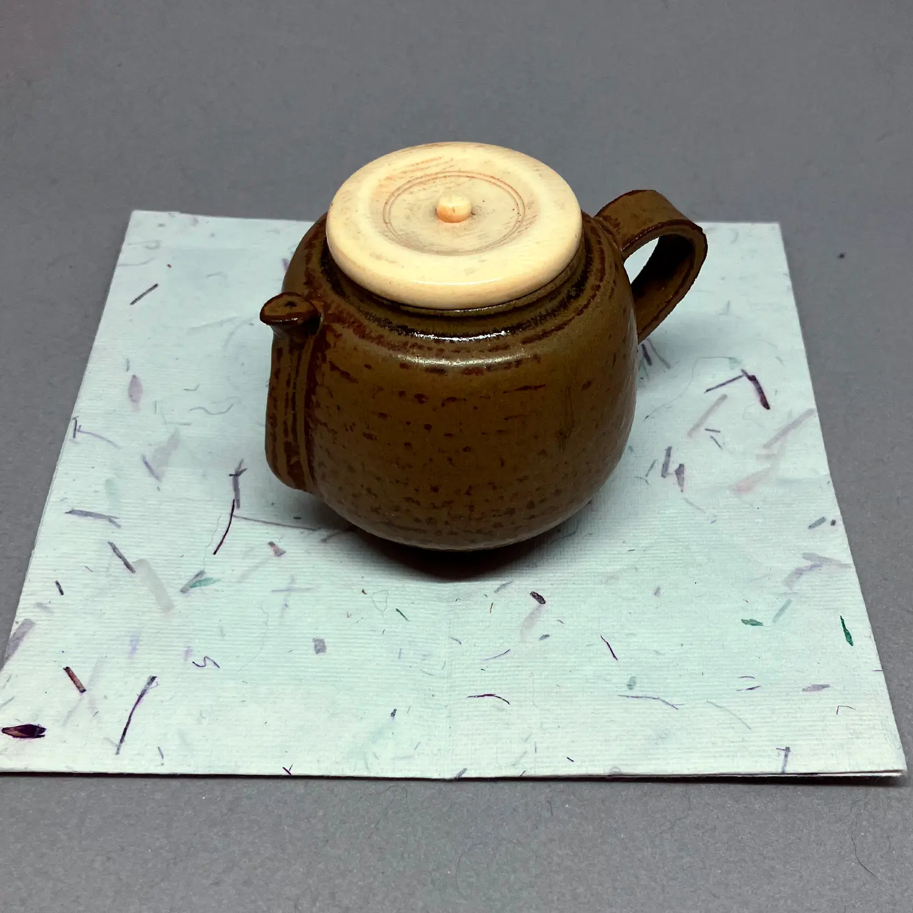
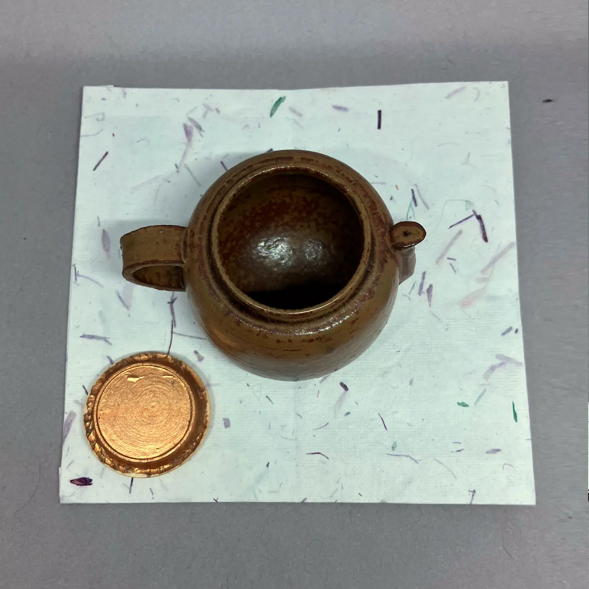
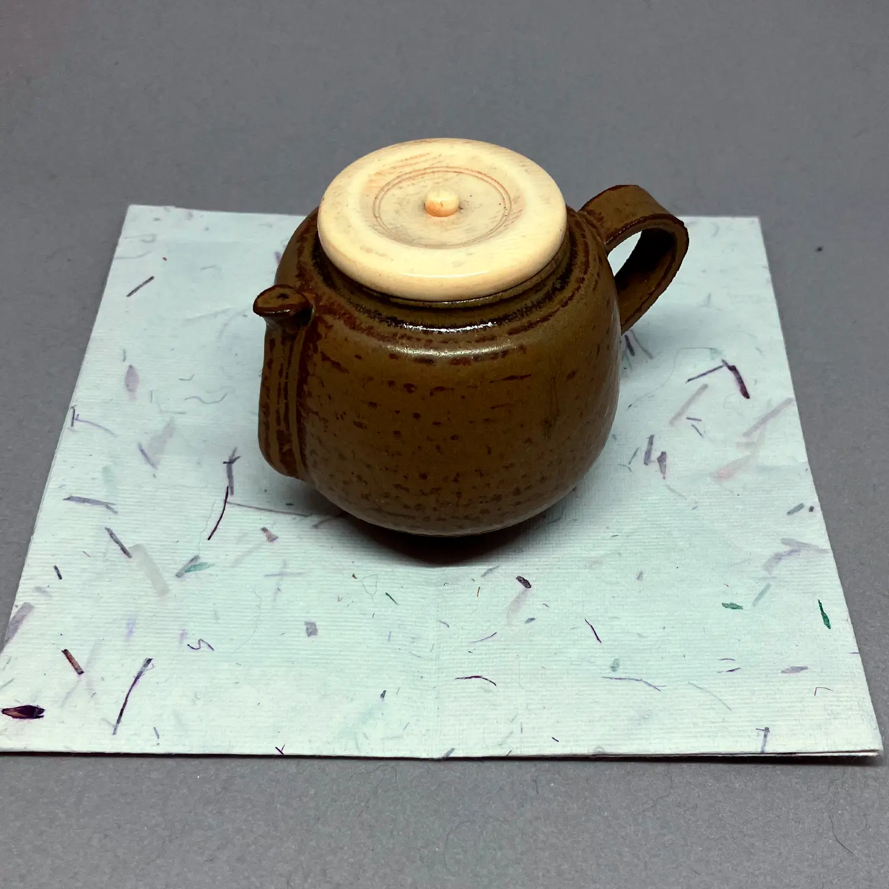
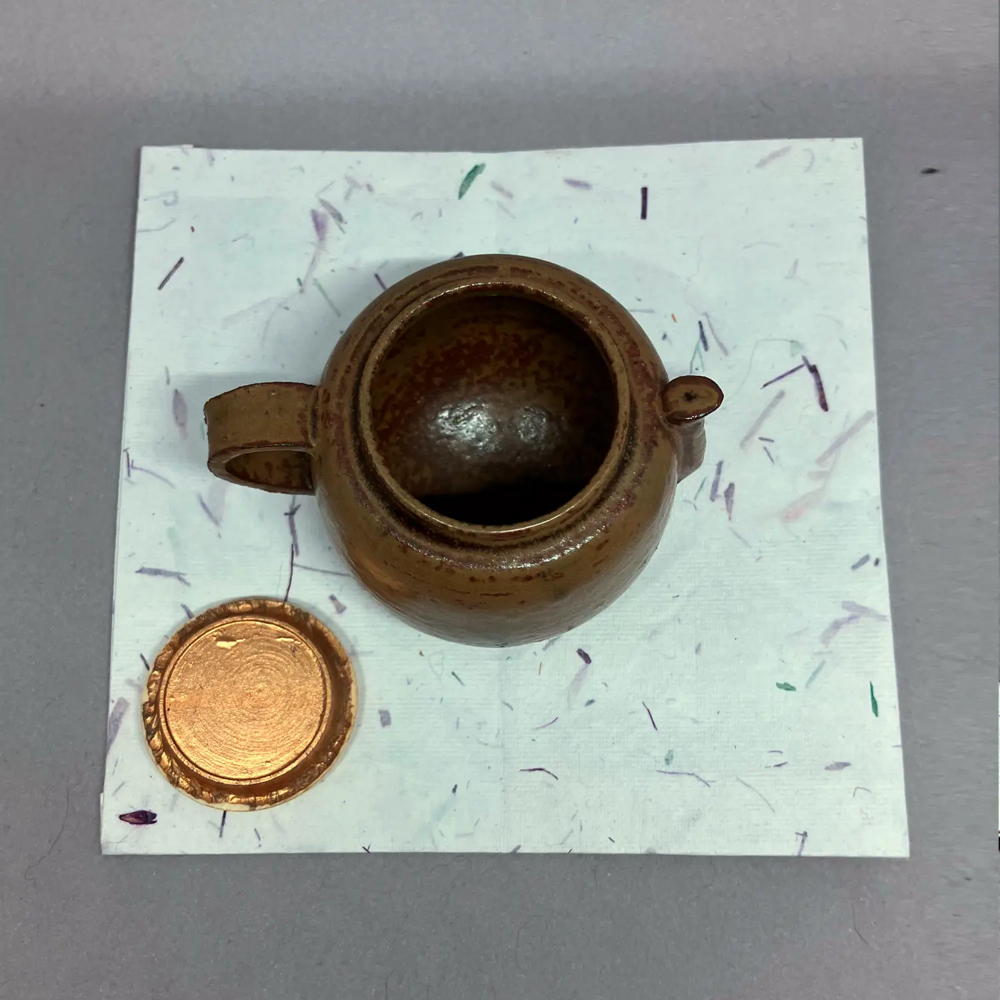
 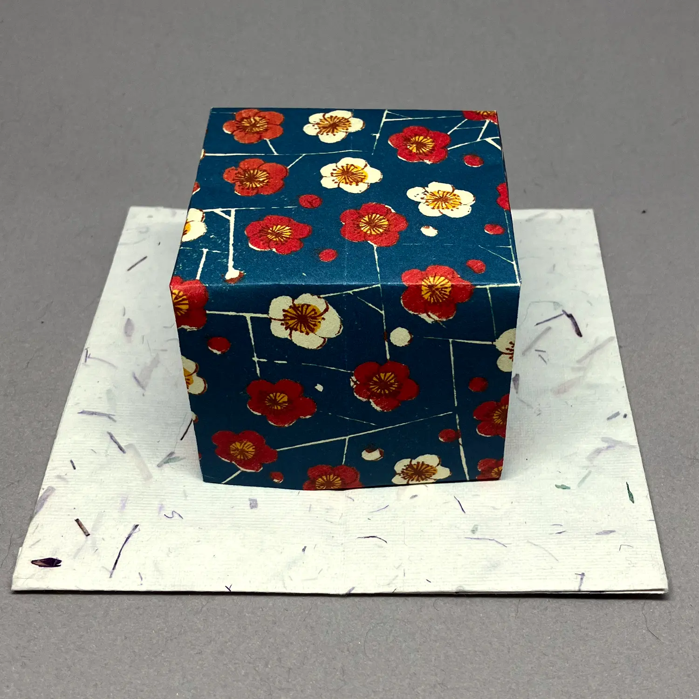
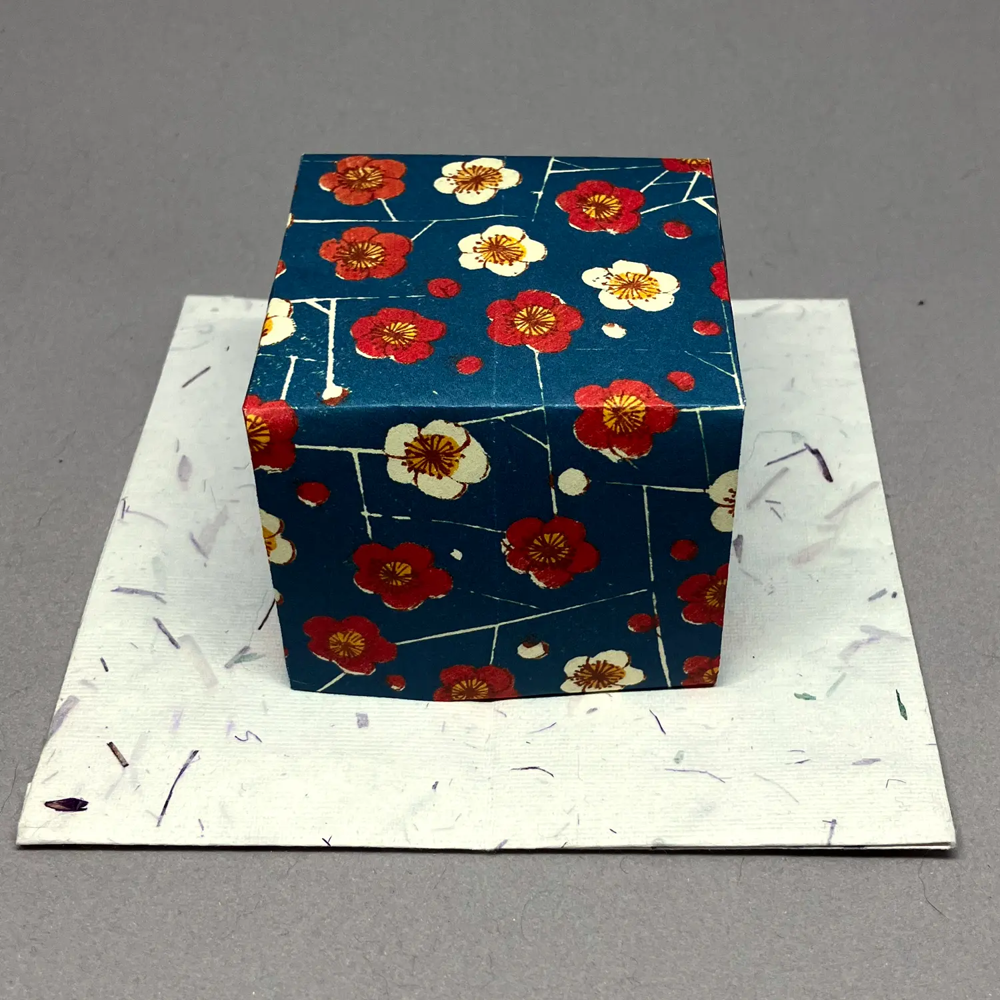
Water Dropper「水滴ã€
This is a classic example of a 四滴 tea caddy. These tea caddies are made of ceramics and usually have an ivory lid, but still are used for light tea! This happens when the host decided to use a lacquered tea caddy such as a 棗 for the service of thick tea, for example in 茶通箱 or in 包帛紗.
This particular example is a æ°´æ»´, and is inspired by the tool that calligraphers use to add drops of water to their ink. Comes with a paper box.
The price includes only the items described above; any other objects in the pictures are for size comparison and illustration only.
Purchase (for 50 Swiss francs) Close Window
Feeding Trough
「餌畚ã€


Feeding Trough「餌畚ã€
This 建水 is probably the most famous of the seven that 利休 preferred. It is called 餌畚, which means a little bag to keep feed in for falconers. This was very popular among the samurai, and serves as a reminder that tea used to be very popular in the warrior classes.
The price includes only the items described above; any other objects in the pictures are for size comparison and illustration only.
Purchase (for 30 Swiss francs) Close Window
Mulberry Tea Caddy
「桑ä¸æ¬¡ã€


Mulberry Tea Caddy「桑ä¸æ¬¡ã€
While there are many tea caddies in this ä¸æ¬¡ shape, the one made from mulberry wood is the one normally used for the 和巾 procedure that was revived by ç„々æ–.
There are two items of this type for sale. They vary only marginally: exhibit A is a bit smaller, a bit lighter and can be seen in the 3D model. It comes with a colourful paper box. Exhibit B has a darker colour and marginally higher. It is portrayed on the photos on this page, and comes in a blue cardboard box.
The price includes only the items described above; any other objects in the pictures are for size comparison and illustration only.
Purchase (for 30 Swiss francs) Close Window
No Idea
「ä¸è˜ã€


No Idea「ä¸è˜ã€
made by Wabei YaritaWhen the Bodhidharma was invited by Emperor Wu of China, the Emperor was hoping to get some wisdom from the legendary monk. However, then the Emperor asked him who he was, the answer was ä¸è˜. It also carries a meaning of I don't care, and quite probably was not what the Emperor wanted to hear. However, it shows the rugged, uncompromising attitude of early Buddhism; which this incense container also captures.
The artist passed away in 2014, after having won several awards and having held several exhibitions. Comes with the artist's box.
The price includes only the items described above; any other objects in the pictures are for size comparison and illustration only.
Purchase (for 20 Swiss francs) Close Window
Persimmon glazed bowl
「柿釉天目茶碗ã€


Persimmon glazed bowl「柿釉天目茶碗ã€
made by Koie TsuyoshiThis 天目 bowl has a very bright, red persimmon-coloured glaze, and a metal rim, which makes it particularly suitable for the å°å¤©ç›® procedure. Its colour contrasts also nicely with the black å° that is typically used during practise. Comes with the artist's box.
The price includes only the items described above; any other objects in the pictures are for size comparison and illustration only.
Purchase (for 80 Swiss francs) Close Window
The Jade Boat
「ç‰èˆ¹ã€


The Jade Boat「ç‰èˆ¹ã€
The name ç‰èˆ¹ is used in Chinese poetry, and describes a vessel for serving rice wine in a courtly setting. One poem in particular comes to mind: I sit by the red fireplace, and pour from the Jade Boat a golden cup. It suits this very special tea scoop, with its three nodes and intense shape.
I matched it with a cloth called 阿è˜é™€é–“é“, where the first three characters stand for the Netherlands. While the Dutch arrived first in Japan only in 1600, their wares had already made it into Japan before them through the Portuguese, who used the word Hollanda to refer to them, and so the Japanese word still is: オランダ or 阿è˜é™€.
Includes the å¤å¸›ç´— and the tea scoop, both in their own paper box.
The price includes only the items described above; any other objects in the pictures are for size comparison and illustration only.
Purchase (for 40 Swiss francs) Close Window
Lute
「çµç¶ã€


Lute「çµç¶ã€
made by Kato ShunteiThe çµç¶ is a Japanese instrument similar to a lute, and is often associated with melancholy. To use an instrument is a particularly suitable shape for an incense container, as the Japanese use the word èã, literally to listen, for the appreciation of incense.
It is made by an artist from a family who have received numerous awards and held exhibitions all over the world. Comes in the artist's box, with an inscription.
The inscription (花押) is by ç”°ä¸ä»™ç¿, the son of the founder of the 大日本茶é“å¦ä¼š, an organisation that promotes an open discussion and research on the way of tea beyond secret transmissions and different styles.
The price includes only the items described above; any other objects in the pictures are for size comparison and illustration only.
Purchase (for 20 Swiss francs) Close Window
Satsuma Tea Bowl
「薩摩焼茶碗ã€


Satsuma Tea Bowl「薩摩焼茶碗ã€
made by Chotaro AriyamaThis 茶碗 is made by an artist who tries to improve the renown of 薩摩焼. Historically, ceramics from 薩摩 were a dignified black; but with time a garish style aimed at exports developed. It is made by a contemporary artist, but in the old style. I find it suitable when a 黒楽 tea bowl is just a little bit too heavy. Comes with the artist's box.
The price includes only the items described above; any other objects in the pictures are for size comparison and illustration only.
Purchase (for 190 Swiss francs) Close Window
Ash Spoons
「ç°åŒ™ã€


Ash Spoons「ç°åŒ™ã€
These spoons are used to shape the ash in the 風炉. The resulting shape is called ç°å‹, and is one of the few things the host actually does themselves in terms of é“å…·. So some people attribute much value to a good ç°å‹, going as far as to say that the ash form they see at the beginning of a tea invitation tells them already how the rest is going to follow. While I wouldn't go that far myself, I find it very meditative; and would recommend all practitioners practise a little bit. These videos I found very useful when starting out.
It is a set of 3 spoons: The one the left is great for working around the 五徳, the one in the middle for flattening the ash and the one on the right for cutting the ridges when doing the most classical shape, the 二文å—. Comes in a paper box.
The price includes only the items described above; any other objects in the pictures are for size comparison and illustration only.
Purchase (for 20 Swiss francs) Close Window
Oribe Bowl
「オリベ茶碗ã€


Oribe Bowl「オリベ茶碗ã€
made by Takefumi OnizawaThis ç¾æ¿ƒ-arist's bowl displays the artist's take on the 織部-style. While the rim is quite sharp, it is still comfortable to drink from. It is quite big, and can be used both as a normal as well as a ç’ tea bowl. Comes with the artist's box.
The price includes only the items described above; any other objects in the pictures are for size comparison and illustration only.
Purchase (for 60 Swiss francs) Close Window
Pure and Impertubable
「é™å¯‚ã€


Pure and Impertubable「é™å¯‚ã€
made by Beatrix Sturm-KerstanThis is a tea bowl from the late German ceramicist Beatrix Sturm-Kerstan, who passed away in 2023. She had made tea bowls specifically for tea for almost 20 years from German clay. Its colour makes me think of the bottom of the ocean, where nothing moves and all is quiet; and so I gave it the name é™å¯‚. It comes in a repurposed paper box.
I'm pairing it with a presentation 帛紗 with a crest to commemorate this great artist. The silk comes with its own paper box.
The price includes only the items described above; any other objects in the pictures are for size comparison and illustration only.
Purchase (for 80 Swiss francs) Close Window
Unborn
「ä¸ç”Ÿã€


Unborn「ä¸ç”Ÿã€
This tea bowl is a 天目 type with a dripping glaze in the front. I called it ä¸ç”Ÿ, which literally means unborn, but means a Zen world view in which there are no birth, no death, no before and no after.
The price includes only the items described above; any other objects in the pictures are for size comparison and illustration only.
Purchase (for 20 Swiss francs) Close Window
Games and Laughter
「ç¦ç¬‘ã€


Games and Laughter「ç¦ç¬‘ã€
This simple è©ç„¼ tea bowl's soft pink hue reminds me of the 葩餅, which is traditionally eaten in January. I thus named it ç¦ç¬‘, which is also used at the beginning of the New Year.
The bowl broke during transport, so it was repaired by Ursula Kaspar in Switzerland using traditionally 銀継. It turns out that the name was well-chosen, given that in German we say Scherben bringen Glück ⸺ the ç¦ in ç¦ç¬‘ meaning good luck, as well. Comes in a cardboard box.
The price includes only the items described above; any other objects in the pictures are for size comparison and illustration only.
Purchase (for 80 Swiss francs) Close Window
Old Calendar
「暦手ã€


Old Calendar「暦手ã€
made by Asami YoshizÅThis style of tea bowl is traditionally used on New Year's Eve, but it could also be used for birthdays or other moments that mark the turning of time. The reason for this is its æ´æ‰‹ pattern, with the 12 lunar months of the year.
It is made by a prolific 清水焼 artist in KyÅto, and comes with a wooden and an outer paper box.
The price includes only the items described above; any other objects in the pictures are for size comparison and illustration only.
Purchase (for 20 Swiss francs) Close Window
Main Soup Bowl
「煮物碗ã€


Main Soup Bowl「煮物碗ã€
The main course in the æ‡çŸ³ meal is something simmered and served in a light, clear broth. It is usually something seasonal, delicately arranged; like a steamed fish dumpling or some seasonal vegetables; and invariably served in a bowl. The course hence is also called 椀盛, with 碗 meaning bowl.
These bowls are lacquered in the 柿åˆã› style, which allows the wood grain to be seen. This is a set of five bowls with matching lids, which I bought in 2018 on rikyucha, and have used it twice since. It is made from lacquered, compressed wood powder (so what appears to be wood grain here is probably not real). Comes with a cardboard box.
The price includes only the items described above; any other objects in the pictures are for size comparison and illustration only.
Purchase (for 20 Swiss francs) Close Window
Nobleman's Bowl & Stand
「貴人茶碗ã¨å°ã€


 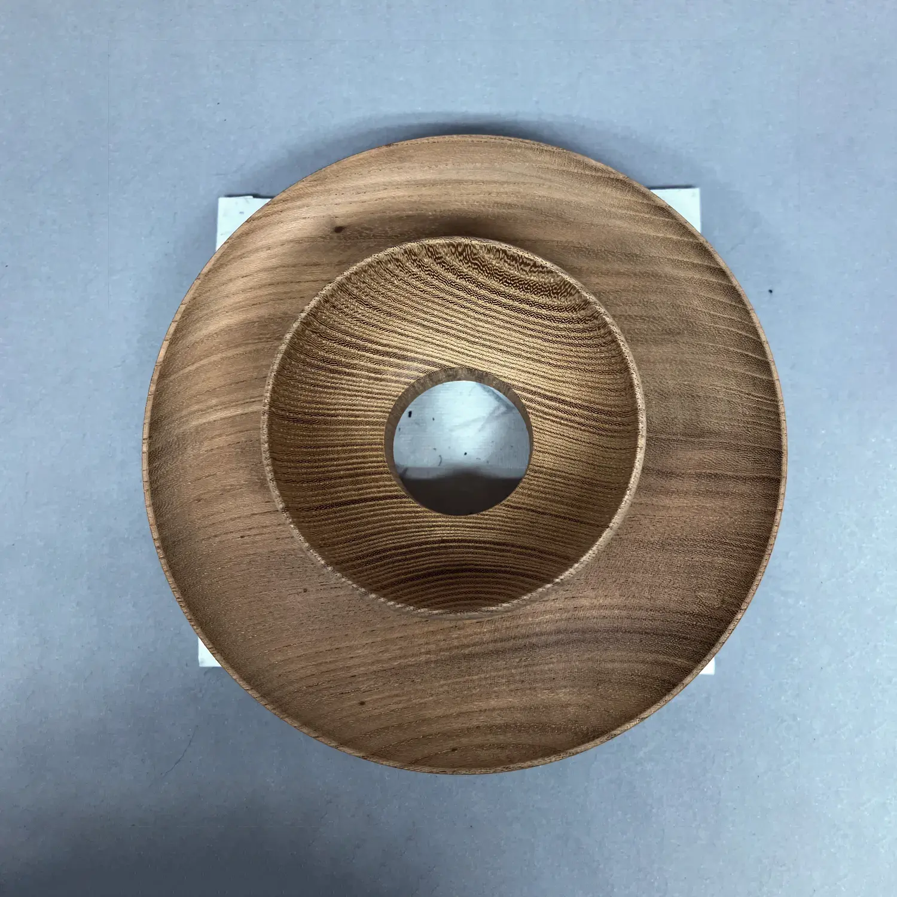
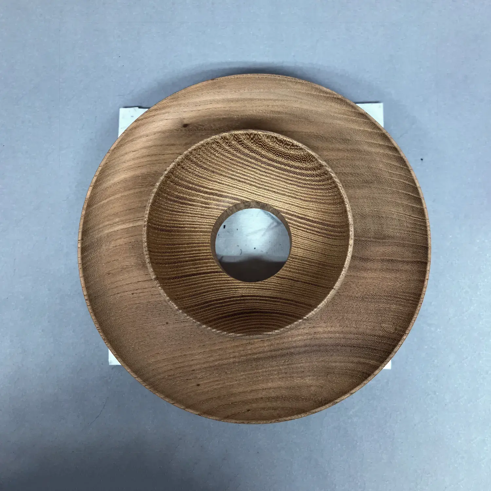

Nobleman's Bowl & Stand「貴人茶碗ã¨å°ã€
Traditionally, a 貴人 is served from a new, white 天目-shaped bowl. This bowl, however, is slightly bent outwards, which gives it a more inviting shape. While it may seem odd to practise a procedure for a nobleman in today's society; I think it is a very smart element of the tea curriculum: First you learn how to treat a nobleman with additional respect than others; then you treat everyone with that level of respect. The bowl and stand both come in a paper box.
The price includes only the items described above; any other objects in the pictures are for size comparison and illustration only.
Purchase (for 50 Swiss francs) Close Window
Parting Stars
「別星ã€


Parting Stars「別星ã€
This name alludes to 七夕 and the two starts Vega and Altair, representing two lovers that cannot be together. å°æ—一茶 wrote a poem about the sadness of their separation, saying: In this world, even the stars are separated. Naturally, it evokes a mood of autumn loneliness and melancholy. This tea scoop has a few dents near the tip; and also the cloth has a few stains. The scoop comes with a tube and paper box; the cloth with a cardboard box.
The price includes only the items described above; any other objects in the pictures are for size comparison and illustration only.
Purchase (for 20 Swiss francs) Close Window
Nothung
「ãƒãƒ¼ãƒˆã‚¥ãƒ³ã‚°ã€


Nothung「ãƒãƒ¼ãƒˆã‚¥ãƒ³ã‚°ã€
made by Okada SaburoThe tea scoop is the sword of the tea master, they say, and thus this tea scoop is named after an actual sword ⸺ probably the sword of Nordic sagas. In Wagner's operas it is called Nothung, in Norse mythology Gram, and in other versions of the story again Balmung. It is the sword the shards of which the hero of the saga inherits; reforges them to a new sword and allows him to slay the dragon. For the tea ceremony, I think the aspect of the reforging is particularly interesting; and makes this tea scoop particularly suitable for October.
It was carved by a Japanese businessman who also practised tea ceremony and liked to carve tea scoops from old temple bamboo. It comes with a bamboo tube, which I have added, just as the name, ex-post; and a paper box.
To tame the bold name and shape a tad, I'm pairing this with a pink 帛紗 with gingko prints. The cloth comes its own cardboard box.
The price includes only the items described above; any other objects in the pictures are for size comparison and illustration only.
Purchase (for 30 Swiss francs) Close Window
Night Sky Cherry Blossoms
「夜桜〠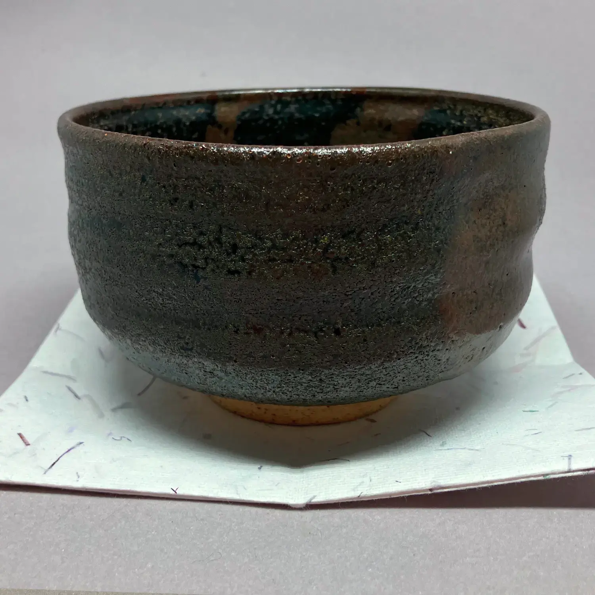
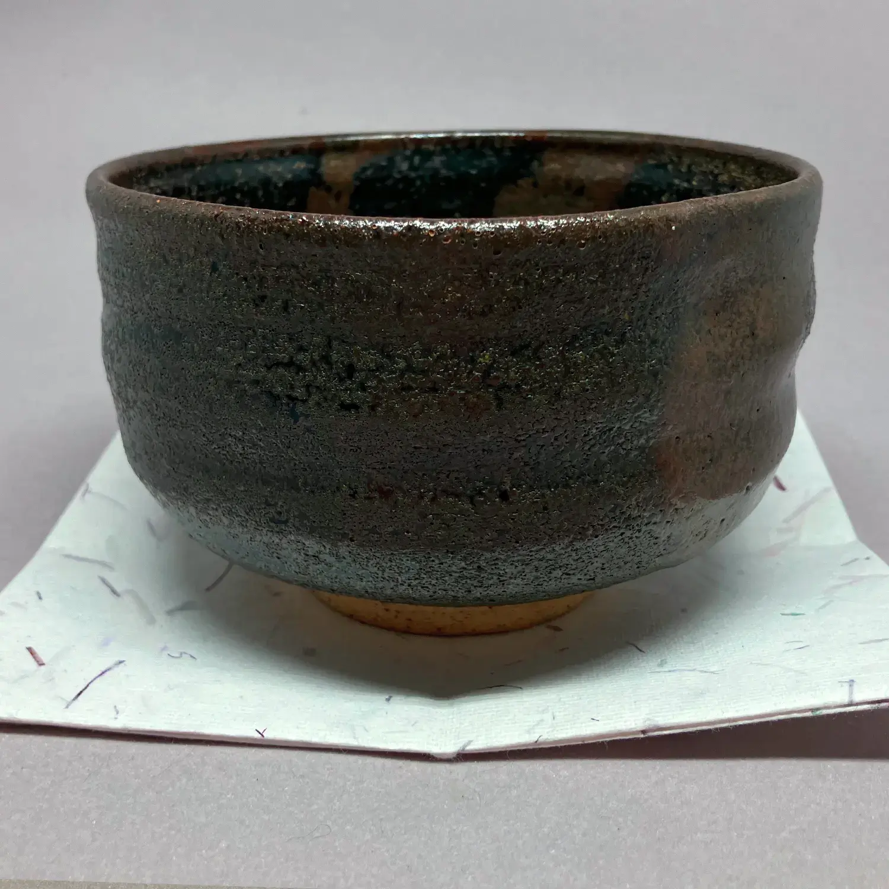
 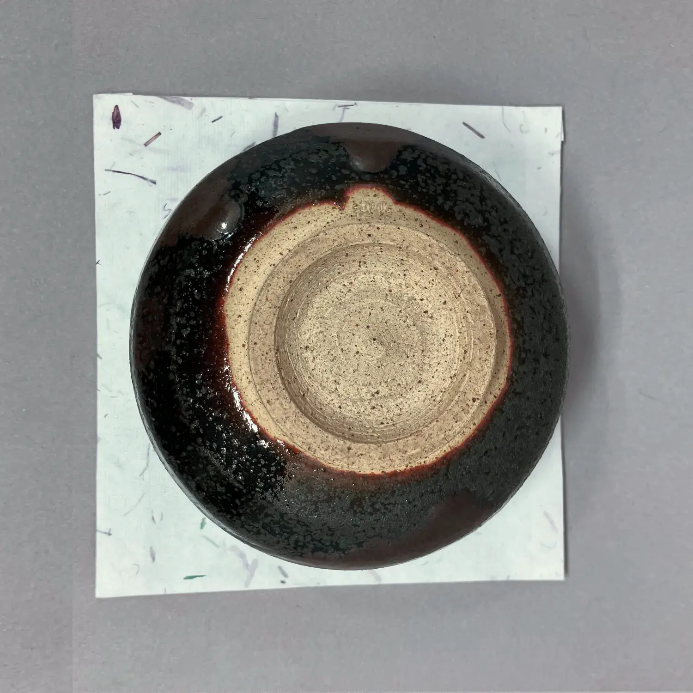
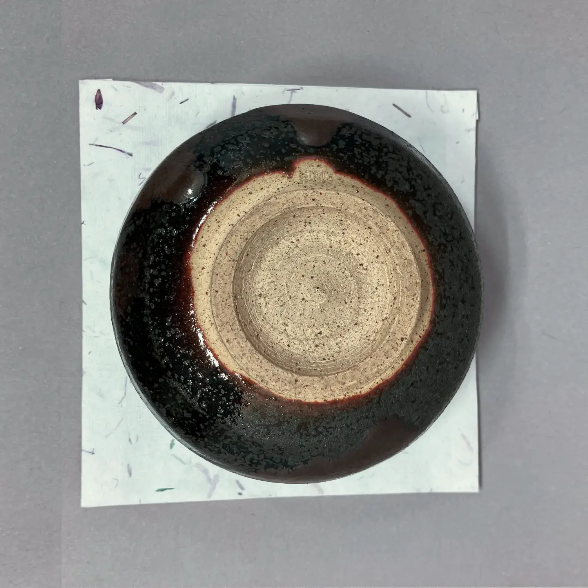


Night Sky Cherry Blossoms「夜桜ã€
made by Sakura kilnThis tea bowl I like particularly for the glaze: parts of the bowl are covered in what looks like oil drops, or to the more poetic mind, like cherry blossom petals, or 夜桜, in the night sky. It is contemporary 薩摩焼, but made closer to the old style, which uses a dark clay and a dark glaze.
The price includes only the items described above; any other objects in the pictures are for size comparison and illustration only.
Purchase (for 20 Swiss francs) Close Window
Jet Black Tea Bowl
「引出黒茶碗ã€


Jet Black Tea Bowl「引出黒茶碗ã€
made by Katsura KilnThis black tea bowl's glaze is a special, shiny black. It is the result of a technique called 引ã出ã—, where the glowing hot tea bowl is removed rapidly from the kiln and cooled instantly, resulting in this jet black glaze.
The price includes only the items described above; any other objects in the pictures are for size comparison and illustration only.
Purchase (for 70 Swiss francs) Close Window
Shell of the Locust
「空è‰ã€


Shell of the Locust「空è‰ã€
made by Okada SaburoThe name is a pun in several ways: First of all, in itself, the shell of the locust is quite a poetic symbol. We need to leave our former selves behind to grow. But it is also the name of a character in the Tale of Genji; a lady that is not necessarily beautiful, but impressed Prince Genji with her stout behaviour and good taste. In my opinion, this aspect suits the simple, yet elegant make of this tea scoop.
Lastly, however, the word ç©ºè‰ itself is interesting. It usually means a living being in general, instead of the locust shell. This is because the characters used to write this word were added ex-post for their sounds rather than their meaning; and with time, the word also got the meaning of hollow locust.
With circadas being a strong summer motif, this tea scoop might be most suitable in summer; but with the more philosophical interpretation of its name, it also lends itself to all-year use for thick tea. It comes with a paper box and bamboo tube. The bamboo tube was added later on, and is not made by the original maker of the scoop.
The maker was a successful bank owner who also was a practitioner in the Japanese tea ceremony. He carved many tea scoops and bamboo utensils, preferably from bamboo he obtained from old temples.
The price includes only the items described above; any other objects in the pictures are for size comparison and illustration only.
Purchase (for 20 Swiss francs) Close Window
rice wine cups
「盃ã€


rice wine cups「盃ã€
During the meal that precedes the tea ceremony, also rice wine is served. While normally, rice wine is consumed from ceramic cups, during a tea gathering, it is served in a more ceremonial fashion: the very shallow 盃, a plate more than a cup, really, which holds enough liquid for just a few small sips. Serving the 酒 in this way, it feels very precious.
The set comes with a 盃å°, a stand for the five individual cups. The entire set I bought in 2018 on rikyucha, and have used it twice since. It is made from lacquered, compressed wood powder. The stand and the cups come with a paper box.
The price includes only the items described above; any other objects in the pictures are for size comparison and illustration only.
Purchase (for 20 Swiss francs) Close Window
Cast Iron Kettle
「鉄瓶ã€


Cast Iron Kettle「鉄瓶ã€
A small 鉄瓶 that I found on an antique market and used for several years for 茶箱 and 略盆 practise. It served me very well, and the pine cone-lid adds a certain charm. It's practically free from rust, but it built up a substantial chalk crust. While it doesn't affect the taste of the water and actually helps protect the iron from rusting, still some people don't like it ⸺ it can be easily removed with a bit of vinegar. Please indicate in the comment if you wish me to remove it when ordering. Comes with a repurposed paper box.
The price includes only the items described above; any other objects in the pictures are for size comparison and illustration only.
Purchase (for 20 Swiss francs) Close Window
Chopstick Rinsing Cups
「箸洗ã€


Chopstick Rinsing Cups「箸洗ã€
There is a somewhat mysterious course in the æ‡çŸ³ menu: The 箸洗, which literally means chopstick washing. It is a very light soup with some solids, the primary purpose of which is really to rinse the chopsticks. However, it also serves a secondary purpose: after this course, 八寸 follows; and here the host will use the lids of these 箸洗 cups to serve little delicacies.
These cups have a pine needle motif, so I think it is quite suitable to serve in them a light soup with some roasted pine nuts. Set of 5, only used twice; comes in a paper box.
The price includes only the items described above; any other objects in the pictures are for size comparison and illustration only.
Purchase (for 20 Swiss francs) Close Window
Neither hot nor cold
「無感情ã€


Neither hot nor cold「無感情ã€
made by Okada SaburoA student asked the monk æ´å±±è‰¯ä»· how he should deal with the cold and the heat. æ´å±± replied: Just go where it's not cold nor hot. But in saying this, he did not mean to travel to such a place, but instead to be like the water ladle we use in the tea ceremony. It doesn't feel the heat of the 釜, nor does it shiver when we scoop cold water with it, because it has no mind. I would use this scoop when the seasons are particularly strongly felt.
The maker was a successful bank owner who also was a practitioner in the Japanese tea ceremony. He carved many tea scoops and bamboo utensils, preferably from bamboo he obtained from old temples. Comes with a paper box.
The price includes only the items described above; any other objects in the pictures are for size comparison and illustration only.
Purchase (for 40 Swiss francs) Close Window
Moon's Guest
「月ã®å®¢ã€


Moon's Guest「月ã®å®¢ã€
made by Nico ČolićThis is a tea scoop I carved to suit a particularly large tea bowl akin to the famed 勢多 tea scoop that 利休 carved to match his student's large 水海 tea bowl.
The 月ã®å®¢ is the moon's guest, or more bluntly, a person looking at the moon. It comes from a poem by èŠè•‰'s student å»æ¥: 岩鼻やã“ã“ã«ã‚‚ã²ã¨ã‚Šâ€”月ã®å®¢. Here at Iwahana somebody is watching the moon, too. It's quite evokative of an autumn night; and there's quite some room for interpretation who this 月ã®å®¢ is: Is it the author? Is it somebody else?
The cloth I'm pairing this tea scoop with suits the cold elegance of the moon; but unfortunately, has some small stains. The tea scoop comes in a paper box.
The price includes only the items described above; any other objects in the pictures are for size comparison and illustration only.
Purchase (for 20 Swiss francs) Close Window
Indian Summer
「å°æ˜¥ã€


Indian Summer「å°æ˜¥ã€
In late autumn, days can still be surprisingly warm and mind. Skies are clear because it is dry, temperatures are warm and the leaves of the trees are turning exceptionally red and orange. These small springtimes invite you to go out and visit the beautiful sceneries of forests changing their colour; quite similar to the cherry blossom viewings in (actual) spring. Comes with a paper box for the tea scoop.
The price includes only the items described above; any other objects in the pictures are for size comparison and illustration only.
Purchase (for 20 Swiss francs) Close Window
Morning Glory
「曙ã€


Morning Glory「曙ã€
made by Hisato KokuryÅA soft red 楽-style tea bowl with almost an orange hue, with a small indentation at the bottom of the bowl that makes it particularly suitable for 茶ã®æ¹¯. The artist called it æ›™, a name that makes this bowl particularly suitable for the New Year; but also any time a feeling of a åˆå¿ƒ is called for.
The artist was a tea practitioner himself, and passed away in 2020, after having won several awards.
Comes with the artist's box, the calligraphy on which is written by 表åƒå®¶ XII
The price includes only the items described above; any other objects in the pictures are for size comparison and illustration only.
Purchase (for 60 Swiss francs) Close WindowFirst Laughter
「åˆç¬‘ã€


First Laughter「åˆç¬‘ã€
January is a month of firsts: åˆå¤¢, åˆé‡œ and æ›¸åˆ are quite famous, but there are many other, quite important things, such as åˆç¬‘, the first laughter of the year. It is thus a good tea scoop for January, and lends lightness to the otherwise more austere mood of thick tea.
Comes with a paper box.
The price includes only the items described above; any other objects in the pictures are for size comparison and illustration only.
Purchase (for 20 Swiss francs) Close Window
Evening Prayer
「晚課ã€


Evening Prayer「晚課ã€
This is a tea scoop with the node at the end, so it is used canonically only for certain higher preparations. The name thus is suitable: During the evening chanting of sutras, the monks purify themselves of the metaphysical dust they've accumulated during the day; just like the tea scoop is purified of the metaphysical dust that is the tea.
It is paired with an unusual cloth: A fabric napkin from the 60s, produced by Zurich company Mavir for Swissair first class flights. It is slightly smaller than a normal å¤å¸›ç´—, and is delivered with a repurposed å¤å¸›ç´—-cardboard box.
The price includes only the items described above; any other objects in the pictures are for size comparison and illustration only.
Purchase (for 20 Swiss francs) Close Window